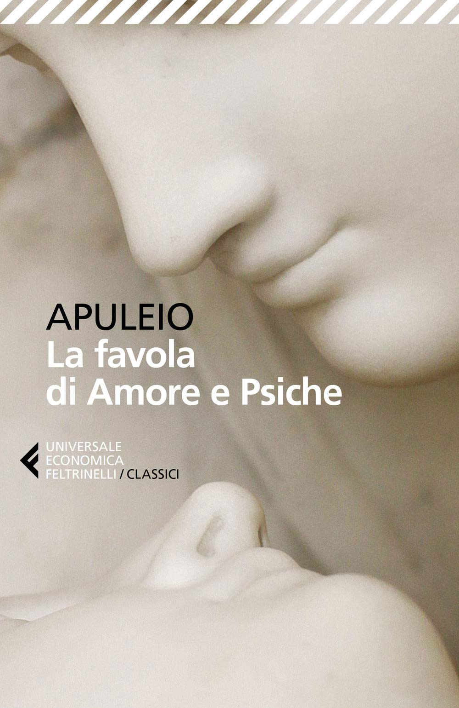

Psiche, la più giovane e bella di tre sorelle, attira su di sé l'invidia di Venere per la sua straordinaria bellezza, tanto da essere paragonata alla dea stessa. Un oracolo la destina a un misterioso sposo che lei potrà amare, ma mai vedere in volto. Da qui prende avvio una delle storie più affascinanti della mitologia classica, fatta di curiosità proibita, prove impossibili da superare e un amore che dovrà dimostrare di saper resistere anche alla diffidenza e al dubbio.
Prima di leggerlo, conoscevo Amore e Psiche solo per sentito dire, senza avere la minima idea di cosa raccontasse. Quando ho visto la copertina in libreria me ne sono innamorata all'istante, e l'ho comprato subito, trattandolo poi come un figlio per paura di rovinarlo. Anche questo l'ho divorato — questa volta in un solo pomeriggio. Mi ha colpita profondamente scoprire che, nonostante sia stato scritto nel II secolo dopo Cristo,contenga insegnamenti sorprendentemente attuali, situazioni che si verificano ancora oggi. Più volte, durante la lettura, mi sono chiesta "ma siamo sicuri che sia stato scritto duemila anni fa?", tornando a controllare la data per essere certa di non essermi sbagliata. Credo di aver amato questa storia anche perché, non avendo aspettative né sapendo cosa aspettarmi, ogni dettaglio è riuscito a stupirmi. Quando è stato rivelato il grande segreto, il mio pensiero è stato immediato: "come ho fatto a non capirlo prima?" Non gli ho dato il voto massimo perché ritengo che la perfezione totale vada riservata a ben poco — ma dentro di me, questo libro vale molto più di un semplice cinque. Anche in questo caso mi sono sentita quasi obbligata a prestarlo e consigliarlo: non potevo tenere per me una storia così bella, andava condivisa. L'insegnamento più grande che mi ha lasciato è che il vero amore non può esistere senza fiducia, rispetto e consapevolezza.
"citazione"
Libro precedente| Torna alla home| Libro successivo
"Ogni libro finito è già un nuovo appetito"